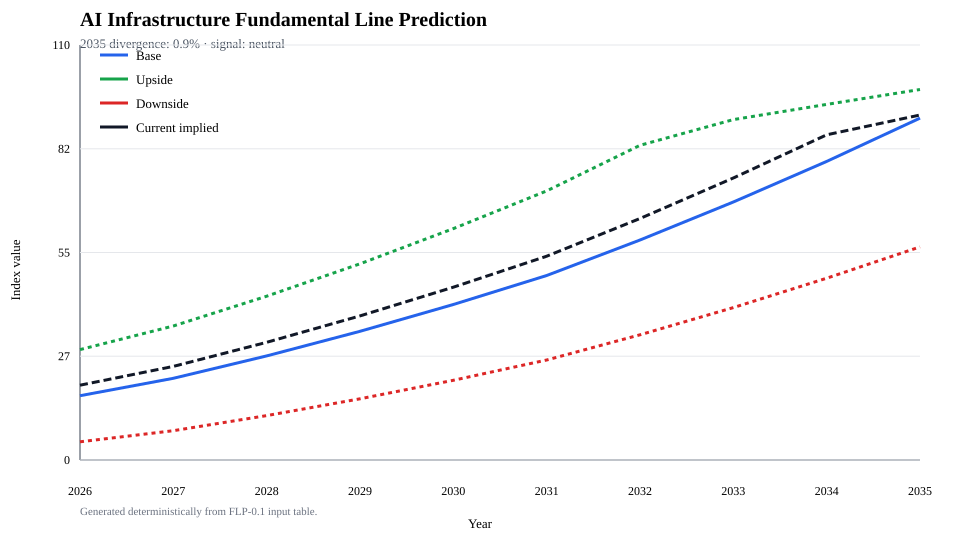

펀더멘털 라인으로 현재 기대를 읽는다
지금 AI 인프라 기대치는 2035 펀더멘털보다 앞서 있는가?
2035 기준선 대비 현재 내재 기대치는 중립권 — 아직 과열 신호는 아니다.
이 앱은 AI/Data Center → Power Grid → Semiconductors → Built Environment → Financial Markets 체인을 deterministic FLP-0.1 방식으로 계산한다. 핵심은 미래를 맞히는 것이 아니라, 현재 기대가 물리적·금융적 제약으로 계산한 2035 정상 경로에서 얼마나 벗어났는지 보는 것이다.
정상 경로
병목 완화
제약 지속
현재 기대 경로
How to use this repo
Start with the advisory report guide before reading sector files, forecasts, or audit outputs.
How to read this
Base / Upside / Downside / Current implied를 먼저 보고, divergence와 signal을 마지막에 읽는다.
Base는 현재 관측 가능한 제약을 반영한 정상 경로다.
Upside는 병목 완화가 빨라지는 경로다.
Downside는 병목이 오래 지속되는 경로다.
Current implied는 현재 시장·정책·투자 기대가 암시하는 경로다.
AI 인프라 펀더멘털 라인 차트
흰색 차트는 재생성 가능한 SVG다. 검은 점선이 현재 내재 기대치다.

Calculation transparency
Deterministic output — CSV에서 읽은 계산 결과이며 해설과 분리된다.
| Year | Base line | Upside band | Downside band | Current implied | Divergence | Signal |
|---|---|---|---|---|---|---|
| loading data… | ||||||
Deterministic output
FLP-0.1 fundamental_score = min( demand_score, capacity_score, finance_score ) fundamental_line = unconstrained_demand_path * fundamental_score divergence = (current_implied - fundamental_line) / fundamental_line
현재 pilot output은 2035 기준 중립권이다. 단, 입력값은 pilot placeholder이므로 실제 투자·정책 판단에는 sector-specific source quantity 강화가 먼저 필요하다.
generator → copy docs assets → audit 순서로 갱신한다.
python3 .github/scripts/flp_chart_generator.py --input 13_scenarios/inputs/flp_ai_infra_inputs.csv --output 13_scenarios/outputs/flp_ai_infra_calculated.csv --chart 13_scenarios/charts/flp_ai_infra.svg
Source artifacts
정적 앱은 아래 산출물을 그대로 읽는다. 로컬 미리보기: python3 -m http.server 8000 --directory docs
{kind=link}